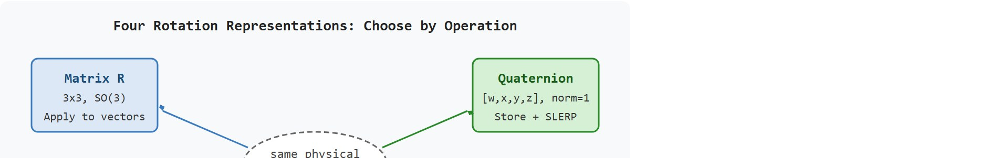
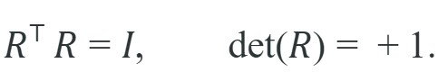
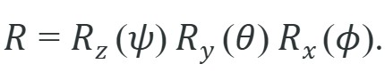
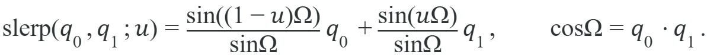

"A robot without frames has many coordinates and no agreement."
A Meticulous Mapping Agent
This section assumes familiarity with coordinate frames and the homogeneous transform structure introduced in section 4.2. The rotation representations developed here are used directly in section 4.4, where rotations are embedded into SE(3) rigid-body transforms, and again in section 5.7, where the rotational part of the Jacobian connects joint velocities to end-effector angular velocity. If you are already fluent with SO(3) and the four standard representations, you can skip ahead to section 4.4.
A surgical robot arm froze mid-procedure because the sensor library reported quaternions in xyzw order while the controller expected wxyz. Both values were perfectly valid numbers; the mismatch was silent until the wrist snapped to the wrong orientation. Rotation representations are the most convention-riddled corner of embodied AI: four mathematically equivalent choices (matrices, Euler angles, axis-angle, quaternions), each suited to a different operation, each carrying its own silent failure mode. As robots move into unstructured environments and learning pipelines chain perception to control, a single representation mistake propagates through every downstream gradient and every actuator command. Here you will build the judgment to choose the right representation for each task, convert between them safely, and catch convention errors before they reach hardware.
One physical tilt of a wrist camera can wear four different costumes at once: yaw-pitch-roll in the log a human reads, a quaternion in the interpolator, a rotation vector in the optimizer, and a 3x3 matrix the instant it touches a point cloud, and getting any one of those costumes wrong points the gripper somewhere the planner never intended. Figure 4.3A above shows all four representations describing one and the same physical tilt, with the gimbal-lock singularity that makes Euler angles risky called out explicitly. The selection map in Figure 4.3B below routes each representation to the operation it serves best, so the choice becomes a lookup rather than a guess.

The builder skill is not memorizing one representation. It is choosing the representation that fits the operation, then checking invariants so a convention mistake does not reach hardware.
A valid rotation matrix satisfies $R^TR=I$ and $\det(R)=1$. A valid quaternion has unit norm. These checks are cheap, and they catch many failures before a gripper points the wrong way.
Rotation matrices are direct operators on vectors and compose by multiplication. Every valid rotation $R \in SO(3)$ (the special orthogonal group, the set of all 3x3 matrices that rotate without reflecting or scaling) satisfies two invariants that double as runtime checks:

The first says the columns are orthonormal; the second rules out reflections (a determinant of $-1$ is a left-handed mirror, not a rotation). Euler angles build a rotation from three elementary rotations about the coordinate axes. Under the ZYX convention with yaw $\psi$, pitch $\theta$, and roll $\phi$,

This factorization is compact and readable, but it has a singularity: when $\theta = \pm 90^\circ$ the first and third axes align and one rotational degree of freedom is lost. This is gimbal lock: one axis swallowed by another. Picture a door hinge nailed to a wall. Once you swing it to exactly 90 degrees, you can push the door forward or backward, but you lose the ability to rotate it sideways until you back off. A controller in gimbal lock can command any yaw or roll it likes. The robot wrist cannot distinguish them and responds to both with the same physical motion. This is why controllers and estimators store orientation as a quaternion. A unit quaternion $q = [w, x, y, z]$ with $\lVert q \rVert = 1$ represents a rotation, its conjugate $q^{*} = [w, -x, -y, -z]$ represents the inverse rotation, and quaternions interpolate smoothly along the shortest arc via Spherical Linear Interpolation (SLERP):

Think of SLERP like a ship's navigator plotting a great-circle route between two ports. On a flat map, the straight line between New York and London passes through the middle of the Atlantic; on the globe, the shortest path arcs up over Greenland. SLERP does the same thing on the surface of a 4D unit sphere: it walks the shortest curved arc between two orientations at constant angular speed, so a camera tilting from "looking left" to "looking right" sweeps through the most direct intermediate angles rather than taking a detour. Plain linear interpolation of the quaternion components would cut straight through the interior of that sphere, shortening the path unnaturally and making the motion speed up then slow down even when the parameter advances uniformly.
The quaternion conjugate matters in embodied AI because undoing a rotation is a constant operation. A wrist camera transforms object poses from camera frame back to world frame. A filter inverts predicted orientation to compute residual error. A controller reverses end-effector rotation, embedded inside the rigid-body transform, to recover joint angles. When the conjugate is computed incorrectly, every frame inversion compounds the error. The robot's sense of "where am I pointing" then drifts without any explicit numerical failure.
The mechanism is geometric. A unit quaternion $q = [w, \mathbf{v}]$ encodes rotation by angle $\theta = 2\arccos(w)$ around axis $\hat{n} = \mathbf{v}/\sin(\theta/2)$. Negating $\mathbf{v}$ while keeping $w$ reverses the axis, which reverses the rotation direction and gives the inverse. The product $q \otimes q^*$ always yields the identity quaternion $[1, 0, 0, 0]$, which serves as the invariant check.
Where the quaternion shines at storage and interpolation, a fourth representation earns its place the moment you stop storing rotations and start optimizing them. The axis-angle representation encodes a rotation as a unit axis $\hat{n} \in \mathbb{R}^3$ and a scalar angle $\theta$, or equivalently as a single rotation vector $\omega = \theta\hat{n}$ whose magnitude is the angle. The conversion back to a rotation matrix is Rodrigues' rotation formula, $R = I + \sin\theta\,[\hat{n}]_\times + (1-\cos\theta)\,[\hat{n}]_\times^2$, where $[\hat{n}]_\times$ is the skew-symmetric cross-product matrix of $\hat{n}$ (so $[\hat{n}]_\times v = \hat{n}\times v$ for any vector $v$); this is the formula libraries such as scipy.spatial.transform.Rotation.from_rotvec apply under the hood. This form is compact (three numbers) and avoids the four-number redundancy of quaternions. It also maps directly onto angular velocity: if a joint rotates at rate $\dot{\theta}$ around axis $\hat{n}$, the body angular velocity is $\omega = \dot{\theta}\hat{n}$. Gradient-based optimizers (pose-graph SLAM, bundle adjustment, hand-eye calibration) prefer rotation vectors because a small additive perturbation in $\mathbb{R}^3$ stays close to a valid rotation. Adding a small vector to a rotation matrix or quaternion, by contrast, can break the invariants. In practice, a bundle-adjustment step that re-normalizes a 9-element rotation matrix after every gradient update typically adds on the order of 3x the floating-point work per iteration compared to updating a 3-element rotation vector with no re-normalization at all, though the exact ratio depends on the linear-algebra backend and problem size. The cost is that composition is more expensive (convert to matrix or quaternion first), and interpolation across angles larger than $\pi$ requires care about the sign of $\theta$.
So far: rotations can be stored as matrices (apply to vectors, check $R^\top R = I$ and $\det R = 1$), Euler angles (human-readable but subject to gimbal lock), quaternions (compact, SLERP-friendly, checked by unit norm), and axis-angle/rotation vectors (best for gradient-based optimization, recovered as a matrix via Rodrigues' formula); the next step is what goes wrong when these four representations disagree about convention.
Each of these four representations is mathematically watertight on its own; the trouble begins when they meet at a boundary between two pieces of code that disagree about how to read them. In robotics, the danger is rarely that a rotation representation is mathematically invalid. The danger is that it is valid under a different convention: xyzw instead of wxyz, degrees instead of radians, zyx instead of xyz, active instead of passive, or camera optical axes instead of body axes.
A common assumption is that $q$ and $-q$ are different rotations because they have opposite signs. In fact, every rotation in SO(3) is represented by exactly two unit quaternions that differ only by a global sign flip: $q$ and $-q$ rotate any vector to the same destination. This double-cover becomes dangerous during SLERP: when $q_0 \cdot q_1 < 0$, the two quaternions are in antipodal hemispheres, and naive SLERP travels the long arc (up to 360 degrees) instead of the short arc, producing a full-spin wrist motion at runtime rather than the intended small correction. In embodied AI, learning pipelines that regress quaternion targets or compute quaternion losses are similarly broken unless the loss is made sign-invariant (using $\min(\|q - q_{\text{target}}\|, \|q + q_{\text{target}}\|)$ or the 6D rotation representation, where the 6D representation stores the first two columns of the rotation matrix and recovers the third by Gram-Schmidt (the standard procedure for turning any two non-parallel vectors into an orthonormal pair, by subtracting out the component of the second vector along the first before normalizing both), giving a continuous, sign-free encoding that neural networks regress cleanly). Always negate $q_1$ before interpolating if $q_0 \cdot q_1 < 0$, and audit any quaternion loss function for sign-invariance before training.
Use matrices for applying rotations, quaternions for storage and interpolation, rotation vectors for small optimization updates, and Euler angles for user-facing display. Convert at boundaries with one tested library and one documented convention.
Input: A rotation task type (apply, store, interpolate, or optimize), a target rotation $R$ or equivalent $(q, \hat{n}, \theta, \alpha, \beta, \gamma)$, and a convention spec (axis order, component order, units)
Output: Validated rotation in the chosen representation, with invariant checks passed and convention documented
scipy.spatial.transform.Rotation). Never hand-roll trigonometric conversion unless validating a reference implementation.Trace SLERP from $q_0$ (identity, no rotation) to $q_1$ (90 degrees yaw about z) at $u=0.5$, using $\text{slerp}(q_0,q_1;u)=\frac{\sin((1-u)\Omega)}{\sin\Omega}q_0+\frac{\sin(u\Omega)}{\sin\Omega}q_1$ with wxyz order.
This fragment walks the whole representation chain. It builds a composed rotation $R_z(45^\circ)R_y(30^\circ)R_x(0^\circ)$ from elementary matrices and verifies the two invariants, demonstrates gimbal lock at pitch $\theta = 90^\circ$, forms a quaternion and its conjugate, and SLERPs between two orientations.
# Rotation representations end to end: matrices, invariants, gimbal lock,
# quaternion conjugate, and SLERP. All angles in degrees unless noted.
import numpy as np
from scipy.spatial.transform import Rotation as Rot, Slerp
def Rx(d): c,s=np.cos(np.radians(d)),np.sin(np.radians(d)); return np.array([[1,0,0],[0,c,-s],[0,s,c]])
def Ry(d): c,s=np.cos(np.radians(d)),np.sin(np.radians(d)); return np.array([[c,0,s],[0,1,0],[-s,0,c]])
def Rz(d): c,s=np.cos(np.radians(d)),np.sin(np.radians(d)); return np.array([[c,-s,0],[s,c,0],[0,0,1]])
# 1. Composed rotation and its invariants.
R = Rz(45) @ Ry(30) @ Rx(0)
print("R.T @ R = I? ", np.allclose(R.T @ R, np.eye(3)))
print("det(R) = ", round(float(np.linalg.det(R)), 6))
# 2. Gimbal lock: at pitch = 90 deg, yaw and roll act on the same axis.
locked = Rot.from_euler("ZYX", [40.0, 90.0, 0.0], degrees=True)
same = Rot.from_euler("ZYX", [ 0.0, 90.0, -40.0], degrees=True) # different angles
print("gimbal lock (two angle sets, one rotation)?",
np.allclose(locked.as_matrix(), same.as_matrix()))
# 3. Quaternion [w,x,y,z] and its conjugate (inverse rotation).
q = Rot.from_matrix(R).as_quat() # scipy returns [x,y,z,w]
q_wxyz = np.array([q[3], q[0], q[1], q[2]])
q_conj = np.array([q_wxyz[0], -q_wxyz[1], -q_wxyz[2], -q_wxyz[3]])
print("q [w,x,y,z]:", q_wxyz.round(4).tolist())
print("q_conj [w,x,y,z]:", q_conj.round(4).tolist())
# 4. SLERP halfway between two orientations.
key = Rot.from_euler("ZYX", [[0,0,0],[90,0,0]], degrees=True)
mid = Slerp([0.0, 1.0], key)([0.5])
print("SLERP midpoint yaw (deg):",
round(float(mid.as_euler("ZYX", degrees=True)[0,0]), 3))scipy.spatial.transform.Rotation.as_quat() always returns [x, y, z, w] (scalar last), but ROS 2 tf2, MuJoCo, and Isaac Lab all expect [w, x, y, z] (scalar first). Pass scalar_first=True to as_quat() (added in SciPy 1.11) to get the wxyz order directly, instead of manually re-indexing the array as [q[3], q[0], q[1], q[2]]. When reading from those frameworks, use Rotation.from_quat(q_wxyz, scalar_first=True) on the way back in. Pinning this one-liner at every serialization boundary eliminates the most common source of silent orientation bugs.
The teaching fragment is about 9 lines. scipy.spatial.transform.Rotation reduces conversion, composition, inversion, and interpolation to named operations. spatialmath and ROS 2 tf2 provide pose-level wrappers when the rotation must travel with translation, frame_id, and timestamp.
A quaternion ordered xyzw but loaded as wxyz can rotate a wrist into a plausible but wrong orientation. The numbers look normalized, the message type looks correct, and the failure appears only when action is attempted.
For a wrist camera, log the camera optical frame axes as three colored basis vectors in the simulator. If the red, green, and blue axes do not match the expected convention, fix the transform before tuning perception or control.
NASA's Apollo Guidance Computer used a physical three-gimbal Inertial Measurement Unit, and the crew genuinely had to avoid gimbal lock, prompting astronaut Michael Collins to joke about the "fourth gimbal for Christmas" they never got. Modern spacecraft, including the International Space Station's Control Moment Gyroscope attitude system, store orientation as quaternions precisely to sidestep that singularity. The same wxyz-versus-xyzw discipline carries straight into robot wrist and drone flight controllers like PX4, which represent attitude internally as unit quaternions.
Euler angles are excellent for telling a human what happened. They are less excellent as the robot's long-term memory of orientation.
Learnable rotation representations for manipulation policies (2024-2026). Large-scale imitation learning pipelines such as pi0 (Physical Intelligence, 2024) and RoboVLMs (2024) have moved beyond fixed 6D rotation heads toward flow-matching and diffusion denoising directly in SO(3), using geodesic score matching on the rotation manifold. Early results (as of 2024-2025) indicate that denoising in the tangent space of SO(3) rather than in a Euclidean proxy can reduce orientation error on dexterous in-hand tasks by 20-35 percent versus flat 6D regression, while preserving the topological continuity advantage that motivated the 6D representation in the first place; figures vary across task distributions and training data scales.
Equivariant neural networks that respect rotation symmetry (2024-2026). Rather than learning to handle rotations through data augmentation, equivariant architectures (SE(3)-Transformers, SEGNN, and Equiformer v2 from Meta AI, 2024) build SO(3) group structure directly into the network weights via spherical-harmonic feature channels. Applied to robot manipulation, the Columbia Robot Manipulation Lab has demonstrated that equivariant grasp planners generalize to arbitrary object orientations without any rotation augmentation, cutting the training data requirement by roughly one order of magnitude compared to standard CNNs on the same task distribution.
On-manifold rotation estimation for contact-rich tasks (2024-2026). Standard pose estimators from perception pipelines (FoundPose, 2024, ETH Zurich; MegaPose 2.0, INRIA/Meta, 2024) output rotation matrices or quaternions that are then fed raw into model-predictive controllers. A gap that remains open: how to propagate rotation uncertainty through a contact model in real time. State estimators like iCEM and MPPI operate on flat Euclidean state spaces and silently project uncertain SO(3) distributions back to point estimates, discarding covariance information that matters at grasp contact. A viable PhD problem is designing a lightweight on-manifold uncertainty representation, such as a Bingham distribution or Gaussian on the Lie algebra se(3), that stays tractable inside a 100 Hz MPC loop and improves contact-success rate on multi-fingered hands without requiring offline training.
Quaternion convention debugger (beginner, weekend): Build a small Python script that reads a ROS 2 bag file or MuJoCo rollout, extracts end-effector quaternions, and flags any frame where the convention switches between wxyz and xyzw or where the norm deviates from 1.0 beyond a threshold; the key challenge is writing a heuristic that detects silent convention swaps without ground-truth labels. Gimbal-lock visualizer for a simulated wrist (intermediate, 1-2 weeks): Instrument a 3-DOF wrist in PyBullet or MuJoCo with a real-time 3D plot of the Euler-angle Jacobian rank, then drive the wrist toward and through the 90-degree pitch singularity to watch the rank drop and recover; the key challenge is connecting the live simulation state to a Matplotlib or Rerun.io visualization at control-loop frequency without stalling the physics step. 6D rotation head for imitation learning (intermediate, 1-2 weeks): Replace the quaternion output head of a small behavior-cloning policy in LeRobot or Gymnasium with a 6D rotation head (Zhou et al. 2019), add Gram-Schmidt orthonormalization before the action is sent to the controller, and compare episode success rate against the quaternion baseline on a pick-and-place task; the key challenge is implementing a sign-invariant orientation loss so the training signal does not flip gradient direction when the antipodal quaternion is sampled.
Rotation conventions feed into Section 4.4 on SE(3), Section 5.7 on Jacobians, and Section 8.6 on filtering orientation estimates.
Goal: Observe empirically how Euler angles lose one rotational degree of freedom at pitch 90 degrees, and confirm that quaternions do not.
Tools: Python with scipy.spatial.transform.Rotation and numpy (no GPU, no robot needed); optionally matplotlib for plotting.
What to do: Sweep pitch $\beta$ from 0 to 90 degrees in steps of 1 degree. At each step, build two rotations under the ZYX convention that differ only in yaw and roll: Rot.from_euler("ZYX", [30, beta, 0], degrees=True) and Rot.from_euler("ZYX", [0, beta, 30], degrees=True). Compute the geodesic distance (the angle of the single rotation that carries one orientation onto the other, the shortest path on SO(3)) between them as (a.inv() * b).magnitude() (in radians).
What to vary: the pitch $\beta$ (the swept variable), and as an extension the yaw/roll split (try 45/0 versus 0/45). Also re-run the comparison on the quaternion forms via .as_quat() to confirm the representation itself is fine; the collapse is a property of the Euler parameterization, not of SO(3).
What to observe: the geodesic distance starts near a nonzero value at $\beta=0$ and shrinks toward 0 as $\beta\to90^\circ$. At exactly 90 degrees the two distinct angle triples map to the identical rotation, so the distance is 0: the yaw and roll axes have merged. Plot distance against pitch to see the singularity approach. Then differentiate the Euler-to-matrix map numerically near $\beta=90^\circ$ and watch the Jacobian rank drop from 3 to 2.
For your favorite robotics library, what quaternion order does it use, and does it expect radians or degrees for Euler conversion?
Rotations: matrices, Euler angles, axis-angle, quaternions; pitfalls sits inside the Part II robotics contract: geometry defines where things are, kinematics defines what motion is possible, dynamics defines what motion costs, control defines how errors are corrected, and sensing defines what the agent can know on time.
Use quaternions or rotation matrices for computation, and treat Euler angles as a display or UI format. The representation then carries an intuitive role, a formal interface, a runnable check, and a reproducible failure mode.
For Rotations: matrices, Euler angles, axis-angle, quaternions; pitfalls, a pose is a typed relationship between frames, not just a vector. The artifact should record parent frame, child frame, units, timestamp, and multiplication order before any transform is trusted.
| Tool or Library | What It Handles | Verification Check |
|---|---|---|
| SciPy Rotation | converts, composes, applies, and inverts 3D rotations in Python | Verify quaternion order, degrees versus radians, and matrix orthogonality. |
| ROS 2 tf2 | maintains time-buffered coordinate-frame relationships for robot systems | Verify parent-child frame names, lookup time, and transform direction. |
| spatialmath-python (Peter Corke) | typed SO(3)/SE(3) pose objects with built-in operator overloading, used in the Robotics Toolbox to chain a Franka Panda or UR5 link transforms | Verify the .R orthogonality and .t units against the hand-built baseline on one elementary link. |
| Drake | models dynamical systems, multibody plants, optimization, and controllers | Verify scalar type, plant finalization, frame convention, and solver status. |
| OpenCV calibration | handles camera models, calibration, projection, and vision preprocessing | Verify intrinsics, distortion, image timestamp, and frame-to-camera transform. |
Apply this recipe when turning rotations into code, a simulator experiment, or a robot diagnostic. You need not reach for every library; you do need the hand-built baseline and the maintained-tool path to stay comparable, so any divergence exposes a convention error.
Before reading on: which of the five libraries in the table above would you trust first to catch a silent wxyz/xyzw swap, and what single test would confirm it?
For Rotations: matrices, Euler angles, axis-angle, quaternions; pitfalls, compare methods only through one saved artifact that preserves the inputs, outputs, units, timestamps, latency budget, configuration, seed, metric definition, and failure labels relevant to this section. The comparison is meaningful only when the same script evaluates the same panel.
Extend the section exercise by adding one perturbation specific to Rotations: matrices, Euler angles, axis-angle, quaternions; pitfalls and one latency or uncertainty check. Save the result in the EvidenceRecord schema, then explain which library output you trust and why.
Most rotation bugs come from order conventions, degrees versus radians, intrinsic versus extrinsic rotations, quaternion ordering, or normalization. A one-vector rotation test catches them early.
A quaternion that arrives in xyzw order but is read as wxyz is not a rotation bug; it is a convention bug wearing a rotation bug's clothes.
Core references for Rotations: matrices, Euler angles, axis-angle, quaternions; pitfalls: Modern Robotics; Murray, Li, and Sastry; Siciliano et al.; LaValle; and official documentation for Drake, MuJoCo, Pinocchio, CasADi, python-control, GTSAM, ROS 2, and OpenCV as applicable.
Use these references to check notation, frame conventions, units, solver assumptions, and maintained-library behavior.
Rotations are safe when representation, convention, and invariant checks travel together.
Convert the same rotation through Euler angles, quaternion, rotation matrix, and rotation vector. Round-trip back to a matrix and report determinant, orthogonality error, and any convention assumptions.